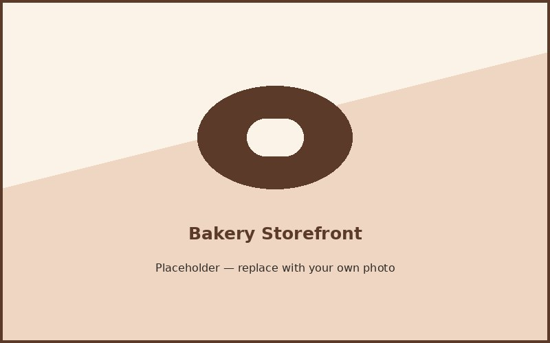

About North Star Bakery

Our Story
North Star Bakery started small, a counter with a handful of loaves and not much else, over ten years ago. It grew slowly into what it is now, with a full bread and pastry case and custom cakes on top of that, but the way we bake has not really changed. A lot of the people who came in during those first couple years are still regulars, and a few of them have watched staff we trained go on to run their own shift. That kind of thing sticks with you.
Sourcing Philosophy
We buy flour, dairy, and seasonal fruit from farms nearby when we can, partly because it tastes better and partly because it keeps the money in the area. Our bakers go out to visit those farms now and then, just to see how things are actually grown rather than take it on faith. It shapes what ends up in the case, the sourdough tastes different depending on the season because the flour does too.
Staff Highlights
Our head baker trained the traditional way and has spent years dialing in the fermentation on the Signature Loaf, tweaking hydration and timing more than most people would think is reasonable for bread. Our cake decorator meets with customers directly to work out designs, and she has a habit of remembering small details from past orders, a kid's favorite color, a family joke, that end up on the cake somehow. Whoever is behind the counter that day usually knows the regulars by name and what they are going to order before they say it.